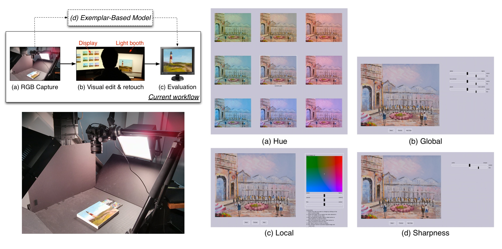
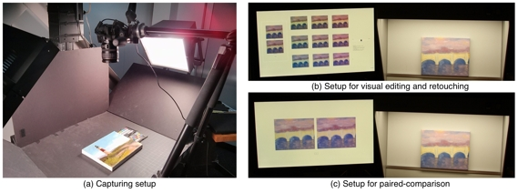
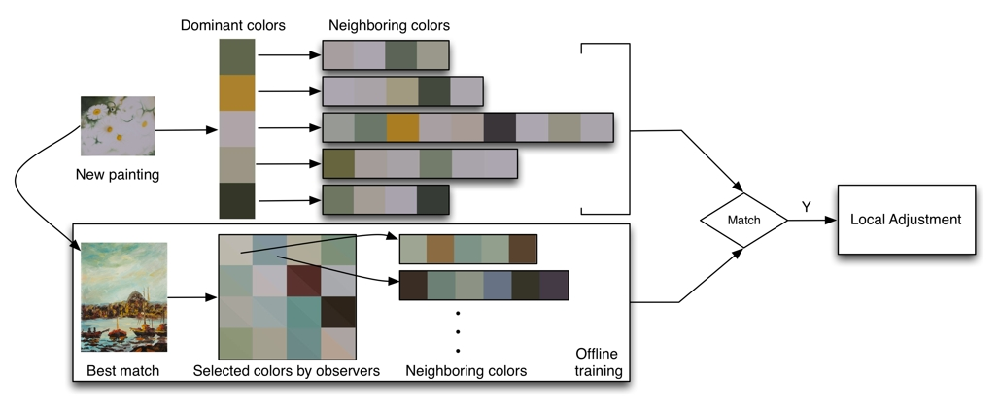
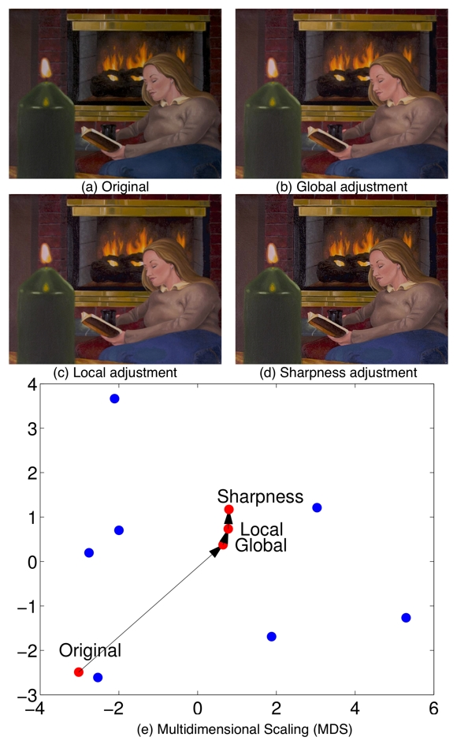

An Exemplar-Based Method for Automatic Visual Editing and Retouching of Fine Art Reproduction |
|  | The advance in camera and imaging technologies has made digital archiving and conservation of artworks possible in museums. Visual editing and retouching are usually made by experts in museums to match the reproduction with the original more closely. While effective, visual editing and retouching is time-consuming and labor-intensive. We addressed this problem by learning from the adjustments made by observers, and automatically making visual editing and retouching on incoming paintings. The evaluation results suggest that the image adjusted by our model is significantly better than the average of the images adjusted by observers. |
Publications
Jun Jiang and Jinwei Gu. An Exemplar-Based Method for Automatic Visual Editing and Retouching of Fine Art Reproduction. Color and Imaging Conference (CIC) 2013.
|
Images
|  |
|
Experimental setup:
(a) Painting acquisition. Canon 60D is mounted perpendicular to the painting on the stage. Two diffuse studio lightings are put on both sides at 45 degree from the stage. ColorChecker is used to correct image white balance after capturing. (b) The setup for visual editing and retouching. Observers were asked to adjust the image on the display to match with the original in the light booth. (c) The setup for the paired-comparison experiment. Observers were asked to choose the image on the display that matches with the original in the light booth more closely.
|
 |
|
The pipeline to make visual editing and retouching of the captured images:
The components in the dashed-line rectangle in (a) correspond to the adjustments by observers. User interfaces: (b) hue, (c) global, (d) local, and (e) sharpness.
|
|  |
|
The workflow for local adjustments:
The new painting, Daisy is matched to Boats (Best match). Local adjustments are made by comparing the dominant color and their neighboring colors of Daisy with those of Boats. In the Selected colors by observers, below and above the diagonal within each patch is the color before and after local adjustments.
|
 |
|
The dominant colors extracted from the painting by Kmeans:
Dominant colors in the
painting of Daisy are learnt by Kmeans in (a), and their respective areas in the painting
from (b) to (f). The five
dominant colors are overlaid on the painting
in (g), and it can be found most part of the painting is covered by
the learnt dominant
colors indicating the representation of dominant colors.
|
 |
|
The paired-comparison
results for the five paintings:
The blue dots are images adjusted by observers, and the red diamonds are the images predicted by our model. The greater the zscore, the more faithful the reproduction is to the original. Overall our model is ranked higher than the average of the images adjusted by observers. The paintings on the y-axis are the last five images in Fig.3 in the paper. Red bars are the 95% confidence intervals.
|
|  |
|
The adjustment results of Firelight at each step:
(a) The original, (b) after global adjustments, (c) after local adjustments, and (d) after sharpness adjustment. Multidimensional scaling (MDS) is used to understand the contribution of each step based on color difference. The blue dots are the reproductions adjusted by observers, and the red dots are adjustments by our model at each step. Most of the changes in Firelight can be explained by the global adjustments.
|
|
Slides
CIC 2013 Presentation
|
Sing Bing Kang, Ashish Kapoor, and Dani Lischinski. Personalization of image enhancement. In CVPR, 2010.
|
|


{kind=link}
{kind=link}
{kind=link}